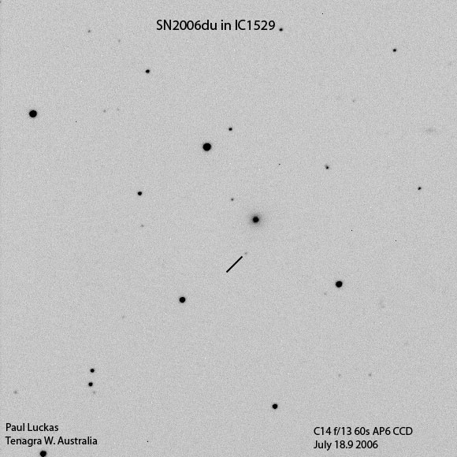

Our 5th Supernova for the year - introducing SN2006du !
(click on image for larger version)

Electronic Telegram No. 583 Central Bureau for Astronomical Telegrams INTERNATIONAL ASTRONOMICAL UNION M.S. 18, Smithsonian Astrophysical Observatory, Cambridge, MA 02138, U.S.A. IAUSUBS@CFA.HARVARD.EDU or FAX 617-495-7231 (subscriptions) CBAT@CFA.HARVARD.EDU (science) URL http://cfa-www.harvard.edu/iau/cbat.html
SUPERNOVA 2006du IN IC 1529 P. Luckas, Perth, W. Australia; O. Trondal, Oslo, Norway; and M. Schwartz, Patagonia, AZ, report the discovery of an apparent supernova on unfiltered CCD frames taken with the 0.35-m telescope at Perth on July 18.9 (at mag 17.0) and 22.9 UT (mag 16.7) in the course of the Tenagra Observatory Supernova Search. SN 2006du is located at R.A. = 0h05m12s.26, Decl. = -11o29'23".6 (equinox 2000.0), which is 13".2 west and 45".6 north of the center of IC 1529 (which itself has position end figures 13s.25, 9".2). Nothing was visible at the position of 2006du on an image taken by Luckas on June 10.8 (limiting magnitude about 18.0) or on a Digitized Sky Survey image from 1983 Oct. 1 (limiting mag 21.0).
Electronic Telegram No. 584
SUPERNOVAE 2006du AND 2006dx The "Nearby Supernova Factory" collaboration (N. Blanc, Y. Copin, E. Gangler, and G. Smadja, Institut de Physique Nucleaire de Lyon; G. Aldering, C. Aragon, S. Bailey, S. Bongard, M. J. Childress, D. Kocevski, S. Loken, P. Nugent, S. Perlmutter, K. Runge, R. Scalzo, R. C. Thomas, L. Wang, and B. A. Weaver, Lawrence Berkeley National Laboratory, Berkeley; P. Antilogus, S. Gilles, R. Pain, and R. Pereira, Laboratoire de Physique Nucleaire et de Haute Energies de Paris; E. Pecontal and G. Rigaudier, Centre de Recherche Astronomique de Lyon; R. Kessler, Kavli Institute for Cosmological Physics, Chicago; and C. Baltay, A. Bauer, D. Herrera, and D. Rabinowitz, Yale University) reports the discovery of a supernova (mag approximately 19.2, calibrated to R) in NEAT images (cf. CBET 263) obtained on July 19.34 UT using the Palomar Oschin Schmidt telescope (+ QUEST II camera). SN 2006dx is located at R.A. = 21h10m34s.49, Decl. = -21o34'42".7 (equinox 2000.0). A spectrogram (range 510-1000 nm), obtained with the Supernova Integral Field Spectrograph (SNIFS) on the University of Hawaii 2.2-m telescope on July 23.45, reveals that 2006dx is a type-II supernova at an approximate redshift of z = 0.035, as measured from the peak of the observed H-alpha feature (in net emission). A weak P-Cyg He I 587.6-nm feature is also detected. SN 2006du (cf. IAUC 8733) was discovered independently in a NEAT image from July 20.48 at an approximate magnitude of 17.2 (calibrated to R). A SNIFS spectrum obtained July 23.60 reveals that 2006du is also of type II, with both H-alpha and He I 587.6-nm P-Cyg profiles; its host galaxy, IC 1529, has z = 0.023 (from the HIPASS Final Catalog 2006, via NED). NOTE: These 'Central Bureau Electronic Telegrams' are sometimes superseded by text appearing later in the printed IAU Circulars. (C) Copyright 2006 CBAT 2006 July 24 (CBET 584) Daniel W. E. Green